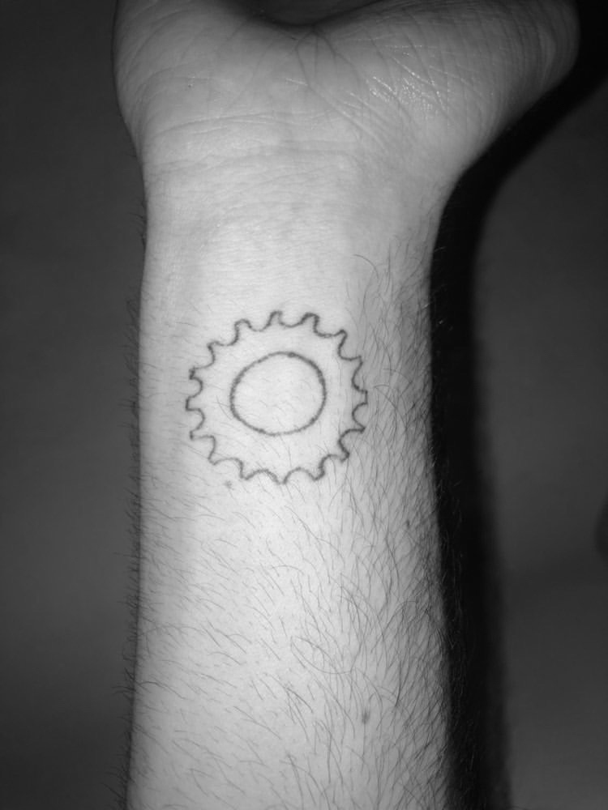

A cog
A cog
TATTOO ONE
Name - Emit White
Tattoo and placement - A mechanical cog on the inside of the forearm.
How old are you? - 19 years old.
How old were you when you got this tattoo? - 19 years old. This year.
How many tattoos do you have in total? - 2
How much did it cost you? - $10
Where did you get it done? - Ariane’s apartment (a friend).
How long did it take? - 20 minutes.
How impulsive was it? - Considered for two years in high school.
Does this tattoo have a meaning behind it? - To commemorate my love of bikes and motorcycles. This is my favorite cog size, it’s what I have on my bike right now. I worked in a mechanics over the summer in Redhook.
Is it your own artwork? - I drew the outline.
BACK BACK BACK BACK BACK BACK BACK BACK
